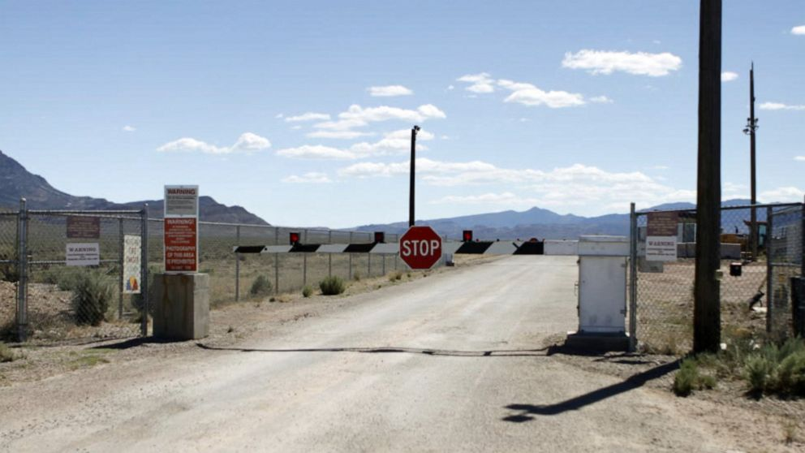

History
The gate sign that will try to stop us.
The history of Area 51 can be traced back to around 69 years ago, when it was first aquired by the US Air Force to serve a test area for America's secret projects. Everything about this site has been shrouded in mystery.

The base in question.
Ever since the Air Force established themselves in this area, strange reports of UFO sightings started to abound throughout the region, which first indicated that strange things were happening in that secret base.
What really cemented area 51 as a place of wonder was a retired army colonel who confessed to seeing and capturing them aliens during his employment. On his deathbed, he whispered tales of the many artifacts of great power that have been kept from the american people.
A few of the many artifacts the old soldier mentioned were:
- Shrek 5-12
- Minecraft 2
- Hand Sanitizer that kills 100% of germs
- Toothpaste that 10/10 dentists recommend
- A genuine Stand Arrow
- PokeBalls
- And most importantly, them aliens
Just the mere whisper of these sacred artifacts have lit a fire in the hearts of the people. The mere thought of treasure has prompted many brave souls to break into the base, yet none have lived to tell the tale.
Our goal is to change that. We have gathered a mighty army unlike any the world has ever seen, we shall be the first to breach that stronghold and find the truth.
They can't stop us all, let's see them aliens.